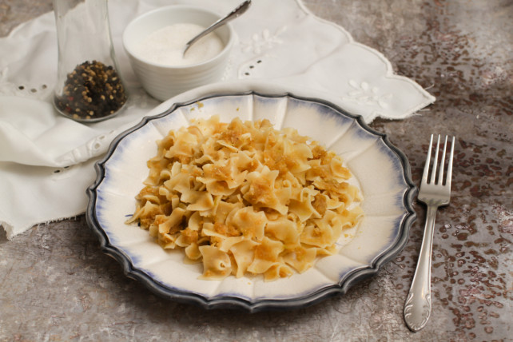

Káposztás tészta

Leírás
Kápsztás tészta - egyszerű, gyors recept
Hozzávalók
- 80dk fejes káposzta
- 30dkg fodros tészta
- 1ek só
- 0.5dl olaj
- bors
Elkészítés
-
A káposztás tészta elkészítéséhez a káposztát négyfelé vágjuk, a
torzsáját kivágjuk, a többit lereszeljük. Megsózzuk, átforgatjuk, és
kb. 15 percig pihentetjük, majd alaposan kinyomkodjuk.
-
Egy nagyobb teflonserpenyőben felforrósítjuk az olajat, hozzáadjuk a
kinyomkodott káposztát, majd magas hőfokon, állandó keverés mellett
kb. 20 perc alatt egyenletes barnára pirítjuk.
-
Közben sós vízben kifőzzük a tésztát a csomagoláson szereplő
utasítás szerint. Leszűrjük, majd összekeverjük a pirított
káposztával. Megborsozzuk, majd sózzuk ízlés szerint.